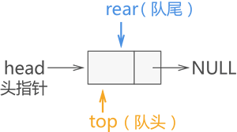
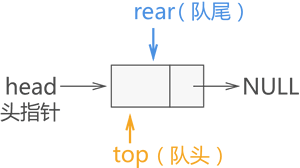

链式队列及基本操作（C语言实现）
链式队列，简称"链队列"，即使用链表实现的队列存储结构。
链式队列的实现思想同顺序队列类似，只需创建两个指针（命名为 top 和 rear）分别指向链表中队列的队头元素和队尾元素，如图 1 所示:

图 1 链式队列的初始状态
图 1 所示为链式队列的初始状态，此时队列中没有存储任何数据元素，因此 top 和 rear 指针都同时指向头节点。
由此，新节点就入队成功了。
例如，在图 1 的基础上，我们依次将

图 2 {1,2,3} 入链式队列
数据元素入链式队列的 C 语言实现代码为：
链式队列中队头元素出队，需要做以下 3 步操作：
例如，在图 2b) 的基础上，我们将元素 1 和 2 出队，则操作过程如图 3 所示：

图 3 链式队列中数据元素出队
链式队列中队头元素出队的 C 语言实现代码为：
前面在学习顺序队列时，由于顺序表的局限性，我们在顺序队列中实现数据入队和出队的基础上，又对实现代码做了改进，令其能够充分利用数组中的空间。链式队列就不需要考虑空间利用的问题，因为链式队列本身就是实时申请空间。因此，这可以算作是链式队列相比顺序队列的一个优势。
这里给出链式队列入队和出队的完整 C 语言代码为：
链式队列的实现思想同顺序队列类似，只需创建两个指针（命名为 top 和 rear）分别指向链表中队列的队头元素和队尾元素，如图 1 所示:

图 1 链式队列的初始状态
图 1 所示为链式队列的初始状态，此时队列中没有存储任何数据元素，因此 top 和 rear 指针都同时指向头节点。
在创建链式队列时，强烈建议初学者创建一个带有头节点的链表，这样实现链式队列会更简单。
由此，我们可以编写出创建链式队列的 C 语言实现代码为:
//链表中的节点结构
typedef struct QNode{
int data;
struct QNode * next;
}QNode;
//创建链式队列的函数
QNode * initQueue(){
//创建一个头节点
QNode * queue=(QNode*)malloc(sizeof(QNode));
//对头节点进行初始化
queue->next=NULL;
return queue;
}
链式队列数据入队
链队队列中，当有新的数据元素入队，只需进行以下 3 步操作：- 将该数据元素用节点包裹，例如新节点名称为 elem；
- 与 rear 指针指向的节点建立逻辑关系，即执行 rear->next=elem；
- 最后移动 rear 指针指向该新节点，即 rear=elem；
由此，新节点就入队成功了。
例如，在图 1 的基础上，我们依次将
{1,2,3} 依次入队，各个数据元素入队的过程如图 2 所示:
图 2 {1,2,3} 入链式队列
数据元素入链式队列的 C 语言实现代码为：
QNode* enQueue(QNode * rear,int data){
//1、用节点包裹入队元素
QNode * enElem=(QNode*)malloc(sizeof(QNode));
enElem->data=data;
enElem->next=NULL;
//2、新节点与rear节点建立逻辑关系
rear->next=enElem;
//3、rear指向新节点
rear=enElem;
//返回新的rear，为后续新元素入队做准备
return rear;
}
链式队列数据出队
当链式队列中，有数据元素需要出队时，按照 "先进先出" 的原则，只需将存储该数据的节点以及它之前入队的元素节点按照原则依次出队即可。这里，我们先学习如何将队头元素出队。链式队列中队头元素出队，需要做以下 3 步操作：
- 通过 top 指针直接找到队头节点，创建一个新指针 p 指向此即将出队的节点；
- 将 p 节点（即要出队的队头节点）从链表中摘除；
- 释放节点 p，回收其所占的内存空间；
例如，在图 2b) 的基础上，我们将元素 1 和 2 出队，则操作过程如图 3 所示：
图 3 链式队列中数据元素出队
链式队列中队头元素出队的 C 语言实现代码为：
void DeQueue(QNode * top,QNode * rear){
if (top->next==NULL) {
printf("队列为空");
return ;
}
// 1、
QNode * p=top->next;
printf("%d",p->data);
top->next=p->next;
if (rear==p) {
rear=top;
}
free(p);
}
注意，将队头元素做出队操作时，需提前判断队列中是否还有元素，如果没有，要提示用户无法做出队操作，保证程序的健壮性。总结
通过学习链式队列最基本的数据入队和出队操作，我们可以就实际问题，对以上代码做适当的修改。前面在学习顺序队列时，由于顺序表的局限性，我们在顺序队列中实现数据入队和出队的基础上，又对实现代码做了改进，令其能够充分利用数组中的空间。链式队列就不需要考虑空间利用的问题，因为链式队列本身就是实时申请空间。因此，这可以算作是链式队列相比顺序队列的一个优势。
这里给出链式队列入队和出队的完整 C 语言代码为：
#include <stdio.h>
#include <stdlib.h>
typedef struct QNode{
int data;
struct QNode * next;
}QNode;
QNode * initQueue(){
QNode * queue=(QNode*)malloc(sizeof(QNode));
queue->next=NULL;
return queue;
}
QNode* enQueue(QNode * rear,int data){
QNode * enElem=(QNode*)malloc(sizeof(QNode));
enElem->data=data;
enElem->next=NULL;
//使用尾插法向链队列中添加数据元素
rear->next=enElem;
rear=enElem;
return rear;
}
QNode* DeQueue(QNode * top,QNode * rear){
if (top->next==NULL) {
printf("\n队列为空");
return rear;
}
QNode * p=top->next;
printf("%d ",p->data);
top->next=p->next;
if (rear==p) {
rear=top;
}
free(p);
return rear;
}
int main() {
QNode * queue,*top,*rear;
queue=top=rear=initQueue();//创建头结点
//向链队列中添加结点，使用尾插法添加的同时，队尾指针需要指向链表的最后一个元素
rear=enQueue(rear, 1);
rear=enQueue(rear, 2);
rear=enQueue(rear, 3);
rear=enQueue(rear, 4);
//入队完成，所有数据元素开始出队列
rear=DeQueue(top, rear);
rear=DeQueue(top, rear);
rear=DeQueue(top, rear);
rear=DeQueue(top, rear);
rear=DeQueue(top, rear);
return 0;
}
程序运行结果为：
1 2 3 4
队列为空
关注公众号「站长严长生」，在手机上阅读所有教程，随时随地都能学习。内含一款搜索神器，免费下载全网书籍和视频。

微信扫码关注公众号